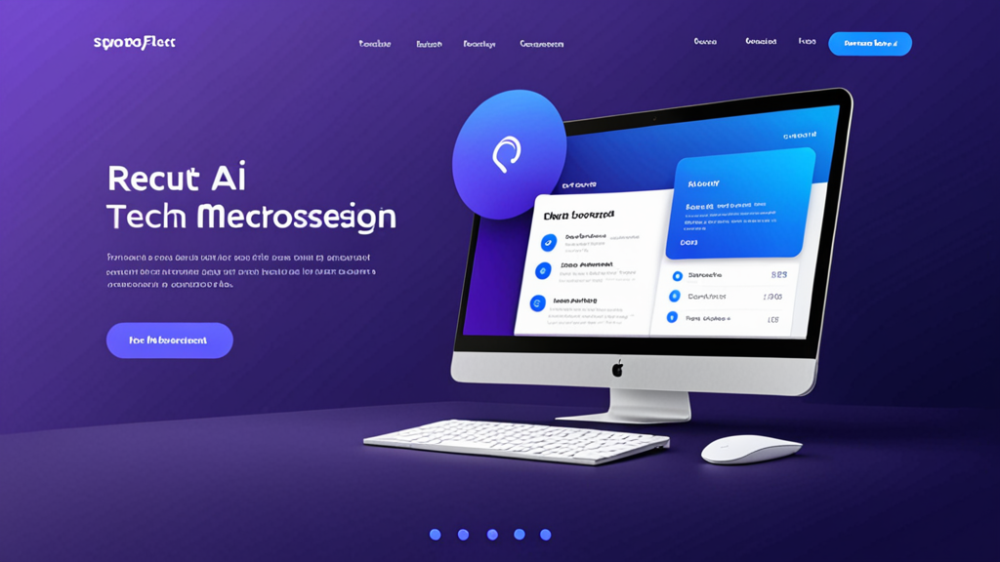

採用メッセージに最適なAI返信ツール：リクルーターのためのスマートなアウトリーチガイド
受動的な候補者にLinkedInでパーソナライズされたメッセージを送るのに10分以上費やしたことがあるなら、その苦労はお分かりでしょう。人間らしく聞こえ、相手の具体的な経験に言及し、適切な行動喚起を含める——しかも間違った会社名を貼り付けてしまわないようにしたい。
採用メッセージに最適なAI返信ツールは、まさにこの問題を解決します。テンプレート的ではなく、パーソナルに感じられるアウトリーチの下書きを支援します。しかし、すべてのツールが同じように機能するわけではなく、効果的に使う方法を知ることが、ロボットのように聞こえるか、きちんと下調べをしたリクルーターのように聞こえるかの違いを生みます。
このガイドでは、AI採用アシスタントに求めるべき点、自分の声を失わずに使う方法、そして返信率を向上させる実践的なヒントを解説します。
リクルーターがより良いメッセージ作成方法を必要とする理由
リクルーターは毎週数十、時には数百ものメッセージを送信します。それぞれにコンテキストの切り替えが必要です：候補者のプロフィールを確認し、職務記述書をチェックし、受信箱で目立つメッセージを作成する。
その結果、多くのリクルーターは汎用的なテンプレートに頼ってしまいます。候補者はそれを瞬時に見抜きます。LinkedInのデータによると、InMailの返信率は平均20～25％程度で、メッセージが量産品のように感じられると、その数値は大幅に低下します。
リクルーター向けメッセージ生成ツールは、時間を節約するだけではありません。量をこなしながら品質を維持するのに役立ちます。候補者の役職、業界、プロフィールの関連詳細を取り込んだ下書きを生成できれば、返信を得られる可能性が高まります。
採用メッセージに最適なAI返信ツールの条件とは？
すべてのAIライティングツールが採用向けに作られているわけではありません。ツールを選ぶ前に、以下の点を確認しましょう。
1. コンテキスト認識能力
ツールは、あなたが誰で、候補者が誰で、どのポジションを採用しているかを理解すべきです。コンテキストを考慮しない汎用的なAIチャットボットは、曖昧で使い物にならない下書きを生成します。
2. トーンコントロール
プロフェッショナルでフォーマルなものから、カジュアルで率直なものまで、トーンを調整できる必要があります。一つのスタイルしか書けない候補者アウトリーチツールでは、さまざまな役職や業界に対応できません。
3. プラットフォーム連携
最適なツールは、あなたがすでに使っている場所で機能します：LinkedIn Recruiter、Greenhouse、Lever、Workdayなど。タブ間でコピー＆ペーストする必要があるようでは、自動化の目的が損なわれます。
4. プライバシーとコントロール
APIキーが漏洩したり、メッセージが自動送信されたりする心配があってはいけません。採用メッセージに最適なAI返信ツールは、送信内容を完全にコントロールでき、データをローカルに保持します。
AI採用アシスタントをAIらしくなく使う方法
優れたツールでも、適切に指示しなければ硬い出力になります。人間らしさを保つための方法をご紹介します。
強力なプロンプトから始める
「生成」ボタンを押すだけでは不十分です。ツールに具体的な詳細を入力しましょう。
- 候補者の現在の役職と会社
- プロフィールにある特定のプロジェクトや業績
- そのポジションが候補者のキャリアパスに関連する理由
プロンプト例：
「Spotifyのシニアプロダクトマネージャーに送る短いLinkedInメッセージを書いてください。特徴的なパーソナライゼーション機能に関する仕事に言及してください。ポジションはシリーズBのフィンテックスタートアップのプロダクトリードです。トーンは親しみやすくプロフェッショナルに。」
出力を編集する
送信する前に必ず下書きを読みましょう。不自然に感じるフレーズは削除します。あなただけが気づく個人的な質問や観察を加えてください。AIは出発点であり、あなたの声がメッセージを完成させます。
ステージごとに異なるテンプレートを使う
コールドアウトリーチのメッセージが、不採用通知のように聞こえてはいけません。AI採用アシスタントは、以下の間で切り替えられるべきです：
- 初回アウトリーチ
- フォローアップ（返信がない場合）
- 面接招待
- 不採用通知または状況更新
各ステージには異なるトーンと詳細度が必要です。
実践例：AIアシスタンスの前と後
AIツールがメッセージを改善する実際のシナリオを見てみましょう。
コールドアウトリーチ
改善前（汎用テンプレート）：
「[名前]さん、あなたのプロフィールを拝見し、当社のポジションに最適だと思いました。ご興味があればお知らせください。」
改善後（AI採用アシスタント使用）：
「Sarahさん、HubSpotでのユーザー維持に関するご活躍——特にチャーンを12%削減したキャンペーン——に注目しました。当社はシリーズA企業で同様のグロースチームを構築しており、あなたの専門知識を活かせる場があります。今週、簡単にお話しする機会はいかがでしょうか？」
2つ目のメッセージは具体的な業務に言及し、調査の跡を示し、明確な質問をしています。これが削除されるか返信されるかの違いです。
フォローアップ
改善前：
「前回のメッセージのフォローアップです。ご興味があればお知らせください。」
改善後：
「Sarahさん——お忙しいのは承知なので、手短に。タイミングが合わなければ全く問題ありません。でも、もしポジションにご興味があれば、詳細をお伝えしたいと思います。いずれにせよ、ご検討いただきありがとうございます。」
このフォローアップは候補者の時間を考慮し、プレッシャーを取り除くことで、返信を得やすくなります。
候補者の返信率を高めるためのヒント
採用メッセージに最適なAI返信ツールを使うことは方程式の一部です。以下に、アウトリーチを改善する追加の戦略をご紹介します。
プロフィールを超えたパーソナライズ
最近の投稿、共通のコネクション、参加したカンファレンスなどに言及しましょう。AIはこれらのニュアンスを常に捉えられるわけではありません——手動で追加してください。
短く簡潔に
候補者はモバイルでメッセージを読んでいます。最大3～5文を目指しましょう。AIの下書きがそれより長い場合は、短縮してください。
負担の少ない依頼を含める
「面談の日程を調整できますか？」ではなく、「ご興味があれば、職務記述書をお送りします」と試してみてください。コミットメントが低いほど、返信率は高まります。
明確な件名を使う（メールの場合）
GreenhouseやLeverなどのATSを使用している場合、メッセージは候補者の受信箱に届く可能性があります。「[会社名]でのご経験についてお伺いしたいのですが」のような件名を使いましょう——「求人情報」ではありません。
採用自動化がそれでも人間らしくあるべき理由
AIを使うことで、自分が本物らしくなくなるのではと心配するリクルーターもいます。しかし、その逆です。ライティングの反復的な部分を自動化することで、重要な部分——候補者のプロフィールを読む、適合性を考える、関係を構築する——に精神的なエネルギーを向けられます。
採用自動化ツールは、タイピングを処理し、思考は処理しないべきです。優れたツールはその境界を尊重します。
ワークフローに合ったツールの選び方
選択肢を評価する際は、ツールが日々のルーティンにどのように適合するかを検討してください。ほとんどの時間をLinkedIn Recruiterで過ごしますか？それともWorkdayやLeverのようなATS内で作業しますか？採用メッセージに最適なAI返信ツールは、別途開く必要のあるアプリとしてではなく、既存のワークフローにシームレスに統合されます。
セキュリティも考慮してください。組織が機密性の高い候補者データを扱う場合、情報をローカルで処理し、メッセージを外部サーバーに保存しないツールが必要です。派手な機能よりも、プライバシー第一の設計が重要です。
これらの条件を満たすツールの一つがRecruitReply AIです。LinkedIn Recruiterや主要なATSプラットフォーム内で動作し、デバイス上のAIを使用し、メッセージを自動送信することはありません。しかし、どのツールを選んでも、このガイドの原則は適用されます。
最後に
採用メッセージに最適なAI返信ツールは、リクルーターを置き換えることではありません。摩擦を取り除くことです。パーソナライズされた人間らしい下書きを数秒で生成できれば、より良いメッセージを、より一貫して、より少ない労力で送信できます。
これにより、返信率の向上、より良い候補者関係、そして実際に重要な採用の戦略的部分に費やす時間が増えます。
ワークフローと候補者のプライバシーを尊重するツールを試してみたい方は、RecruitReply AIをご覧ください。自分の声を失わずに、より速く、より良いメッセージを書きたいリクルーターのために作られています。